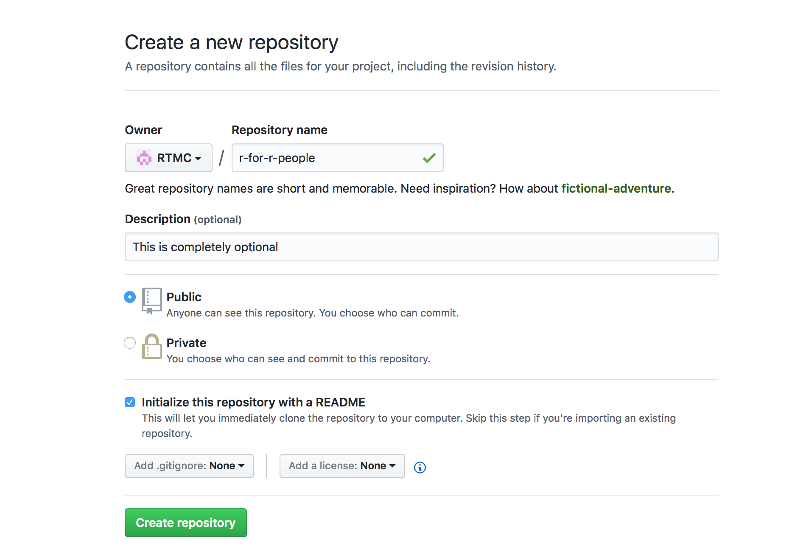

Guide for teachers
Create tmc account
Follow the instructions in this guide to create a test my code account which allows you to link the exercises to the course.
Creating a course repository
To create a tmc-course for R, you will need to create a git repository. This will contain exercise folders that serve as the basis for students’ code for the exercises. Also in this repository you can write the tests for each exercise to check if students’ code runs correctly.
There are couple of ways to create a repository. If you know your way around git, feel free to do it however you prefer to.
One easy way to create a git repository is using GitHub, which is a repository hosting service.
First, sign up / log in to GitHub.
After logging on, you’ll see the GitHub front page and (somewhere there) a big green button saying new repository. Click it.

Fill in the needed fields. The repository needs a name at least.

And here it is, an empty repository. Now you can begin adding exerises.

Structure of the repository
Your repository should be structured something like this:
- ROOT
Week101_some_exerciseRarithmetic.R
srcempty.txt
teststestthattestArithmetic.RtestArithmeticHidden.R
02_some_other-exerciseRmatrices.R
srcempty.txt
teststestthattestMatrices.R
Week2
The root of the repository has directories for each exercise as subdirectories. In each of these directories, you should include three separate directories:
R:- This is where the code that the students can edit goes. You can have the student write the whole file or simply parts of the file.
src:- This is a dummy directory that exists for a technical reason.
- You should include an empty text file “empty.txt” in this folder
test:test-folder has a subfolder,testthat, where the test-files go. In these files, you can include test that check whether the student has written correct code in theR-folder. If the student file is called somename.R, the test file should be named testSomename.R. That is, you should name the corresponding test file by prepending “test” to the name of the student file and capitalizing the first letter of the student file.- If you want to create a hiddent test file that the students can’t see, append “Hidden” to the end of the file name. Say that you want to create a hidden test file for the student file
matrices.R. This should be namedtestMatricesHidden.R.
Adding your repository to TMC servers
After creating your repository with the skeleton presented above, you can add it to TMC servers. To this end, follow the steps in item 1.2 in this material
Writing tests
The tests should be written in the folder tests/testthat. Suppose you have a student source file vectors.R where the student is instructed to create a vector containing all integers from 8 to 800 by interval of 8 (that is, the integers 8, 16, 24, …, 792, 800).
To test this, create a test file tests/testthat/testVectors.R. Below is an example of how this file could look like:
library('testthat')
points_for_all_tests("r7")
test("7b", "r7.1", {
expected_v1 <- c(8, 16, 24, 32, 40, 48, 56, 64, 72, 80, 88, 96, 104, 112, 120, 128,
136, 144, 152, 160, 168, 176, 184, 192, 200, 208, 216, 224, 232,
240, 248, 256, 264, 272, 280, 288, 296, 304, 312, 320, 328, 336,
344, 352, 360, 368, 376, 384, 392, 400, 408, 416, 424, 432, 440,
448, 456, 464, 472, 480, 488, 496, 504, 512, 520, 528, 536, 544,
552, 560, 568, 576, 584, 592, 600, 608, 616, 624, 632, 640, 648,
656, 664, 672, 680, 688, 696, 704, 712, 720, 728, 736, 744, 752,
760, 768, 776, 784, 792, 800)
expect_equal(v1, expected_v1)
})
test("7c", c("r7.2"), {
expect_equal(pituus, 24)
})
There are a few important things to note in this test file:
- include the line
library('testthat')at the beginning of your test file. - Determine the points that the student from solving the exercise problems using the function
points_for_all_tests("r1"). It doesn’t really matter what your points are called, as long as they are unique. For example, you could use names a1, a2, a3,… or ex1, ex2, ex3… for the points. - You can tests students code with the
test-function. Test function works almost exactly liketest_that-function from the testthat-library, but it allows you to pass the points corresponding to the test as parameter. For example, in the following snippet, the corresponding points are given as a parameterc("r7.2").test("7c", c("r7.2"), { expect_equal(pituus, 24) }) expect_equal-function allows you to check whether two variables have the same value. From testthat-documentation you can read more about theseexpect_-functions. If allexpect_-functions inside atest-function passes, the the student is given the point given as a parameter in the function call.
Hidden tests
As mentioned above, if you want to have hidden tests for the exercise, include the string “Hidden” anywhere in the name of the test file. So if you want to test the file matrices.R, you should have a test called testMatricesHidden.R in the folder tests/testthat.
Mocking functions
Testing R might be tricky in some cases where the student is instructed to use functions like plot, paste, rnorm that do not create any testable object or create objects that are inherently random and as such difficult to test.
Luckily, with RTMC you can circumvent these problems by creating mock functions in the test environment. When the student uses, say, plot-function, the function that is called is the standard plot-function for R. However, when the tests are run, these functions can be overriden and their parameters can be collected, allowing you to test if the student has used the correct parameter values when calling the function.
To do this, you should include a file called mock.R in the folder tests/testthat. This file could look like this:
#In this file, the teacher can override R functions so that she/he can
#test whether the student has used some function (and maybe with the correct
#arguments)
used_plot_args <- list()
used_paste_args <- list()
plot <- function(x, y, ...) {
params <- list(x = x, y = y, ...)
# Assigning to environment before this function call:
env_parent <- parent.frame()
env_parent$used_plot_args[[length(used_plot_args) + 1]] <- params
graphics::plot(x = x,y = y, ...)
if (file.exists("Rplots.pdf")) {
file.remove("Rplots.pdf")
}
}
used_paste_args <- list()
paste0 <- function(...) {
params <- list(...)
# Assigning to environment before this function call:
env_parent <- parent.frame()
env_parent$used_paste_args[[length(used_paste_args) + 1]] <- params
base::paste0(...)
}
This file is sourced before any tests are run, so you can override some of the functions that the student might use. For example, in the passage
used_plot_args <- list()
plot <- function(x, y, ...) {
params <- list(x = x, y = y, ...)
# Assigning to environment before this function call:
env_parent <- parent.frame()
env_parent$used_plot_args[[length(used_plot_args) + 1]] <- params
graphics::plot(x = x,y = y, ...)
if (file.exists("Rplots.pdf")) {
file.remove("Rplots.pdf")
}
}
we first create a list of function call parameters used_plot_args. After that, we override the plot function, collect the arguments used to construct the plot, and finally call the plot-function.
Now you can test if the student has use the correct arguments when calling plot. Your test file might have lines like these:
expect_equal(used_plot_args[[1]]$x, seq(0,10, by = .1))
expect_equal(used_plot_args[[1]]$y, sin(seq(0,10,by=.1)))
expect_equal(used_plot_args[[1]]$main, "sin x")
These expectations pass if the student has called plot with plot(x = seq(0, 10, by = .1), y = sin(seq(0, 10, by = .1), main = "sin x")).
You can mock any function following this template.